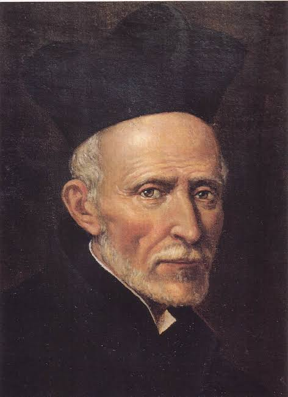

1929 aproximadamente: El deseo de ser religioso

Paula llegó a pensar que el sacerdote del encuentro en Zaragoza pudo ser San José de Calasanz, fundador de las Escuelas Pías.
David manifestó a su hermana Paula su deseo de entrar en la vida religiosa. Según el recuerdo de ella, le dijo:
«Ya tengo 21 años y aún no he hecho nada por Dios, así que he pensado ser religioso, y para mí, ser redentorista es lo mejor».
Inicialmente pensaba, por tanto, hacerse redentorista. Sin embargo, poco después ocurrió un encuentro que cambiaría el rumbo de su vida.
Mientras caminaba por las calles de Zaragoza, se encontró con un sacerdote que le pidió una limosna. Después de recibirla, aquel sacerdote le preguntó:
«¿No te gustaría ser escolapio?»
A partir de aquel momento, David comenzó a pensar en las Escuelas Pías y decidió orientar su vocación hacia la vida escolapia.
Su hermana Paula recibió la decisión con gran alegría. David sentía además un gran amor por el Santo Padre y por las Escuelas Pías. Debido a la circunstancia de aquel encuentro, Paula llegó a pensar que el sacerdote que había hablado con David podía haber sido San José de Calasanz, fundador de las Escuelas Pías, pues, según el recuerdo transmitido por la familia, los escolapios de aquella época no acostumbraban a pedir limosna.